Sometimes, the behavior codified in the policy is much simpler than the action value function. Thus, learning the policy directly can be more efficient. Learning policies is an end-to-end solution for solving many real-world RL problems. Coding such end-to-end solutions may be done under the umbrella of policy gradient methods. Once we cover the policy gradient theorem, we will see how we still need to use action value approximations to estimate the gradient of the average reward objective. A second way that we will use value function approximations is in the actor-critic algorithms. Here, the policy is called the actor, and the value function is called the critic. The critic evaluates the policy, and the actor is used to update the policy. The actor-critic algorithms are a hybrid of policy gradient and value function methods. They are more stable than policy gradient methods and can be used in more complex environments.
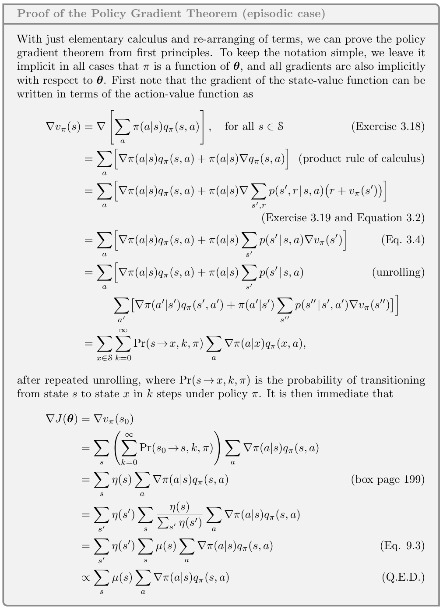

I found policy gradient methods to be rather complicated at first blush. Eventually, as the finer points sunk in, I developed bits and pieces of intuition that made me feel more comfortable.
Parametrized policies are much easier to conceptualize than parametrized value functions. One intuition is that the parameters are weights for the action, and the policy’s actions are drawn in proportion to these weights. The softmax policy does precisely this type of weighting. My Bayesian-trained intuition for these weights comes from the categorical distribution 1. For this distribution, we can define success as the action that gets my agent closest to its goal. This intuition is just my first-order mental model; we will develop more sophisticated machinery as we go along.
The obvious question that will arise as soon as you deal with some environment is:
“How can we get some arbitrary feature \theta to participate in the parametrized policy?”
The answer that comes to mind is use it to build the weights.
The usual suspect is a (Bayesian) linear regression that includes the feature .
How is my feature \theta going to participate in the decisions made by \pi?
If we tweak this feature, how will the policy give us better returns? Since we want to maximize returns, we should adjust the weights in the direction that provides us with the best returns.
That is also the intuition for a parametrized policy’s update rule. The direction is just the gradient of the policy. The big hurdle lies in estimating this gradient.
The course material is very concise and laser-focused on very specific learning goals. The policy gradient theorem is the key result that allows us to estimate policy gradients. Unfortunately, the course instructors did not cover the proof, which is silently relegated to the readings.
This proof is not as simple as represented in its preamble in the book. I saw both longer and shorter versions of proofs and felt that there is a bit of hand waving in one of the steps2. Many people who are seriously interested in RL will be compelled to go through the proof in detail. Also, more experienced students can make greater leaps.
One of my goals is to make satisfactory proofs for episodic and continuing cases that I can walk though at ease.
Also, I was disappointed that this course does not cover more modern algorithms, such as TRPO, PPO, or other Deep learning algorithms. I cannot stress this point enough.
In the last video in the previous lecture’s notes by Satinder Singh, all of the research on using Meta gradients to learn intrinsic rewards is also built on top of policy gradient methods - where he and his students looked at propagating these gradients through multiple the planing algorithms and later through the learning algorithm to learn a reward function and tackle the issues of exploration.
Extra resources I found useful to review though not required, nor part of the course material
Here are three extra videos by experts in the field that delve deeper into this topic. Each of these instructors have published papers with some of the most groundbreaking algorithms in the field and have a lot of insights to share.
In this lecture John Schulman covers Deep Reinforcement Learning Policy Gradients and Q-Learning. John Schulman is a research scientist at OpenAI and has published many papers on RL and Robotics. John Schulman who developed PPO and TRPO and Chat-GPT
In this lecture Pieter Abbeel covers policy gradients and advantage estimation. Pieter Abbeel is a professor at UC Berkeley and has published many papers on RL and Robotics.
In this lesson from a Deep Mind Course Hado van Hasselt covers some advantages as well as challenges of policy gradient methods.
Lesson 1: Learning Parameterized Policies
Learning policies directly (Video)
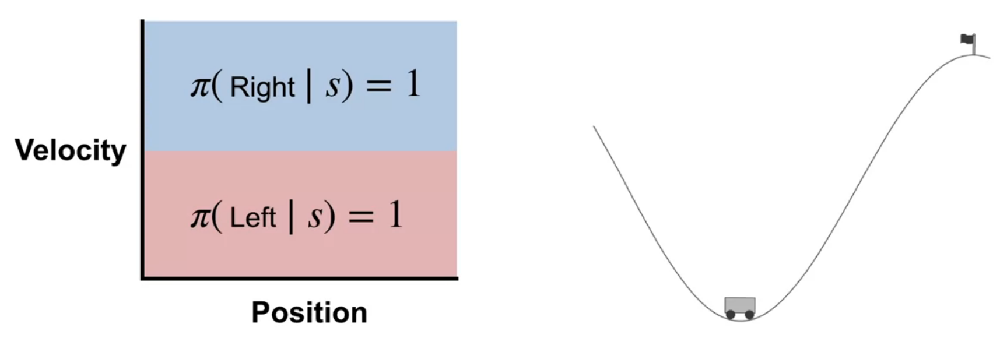
In this lesson course instructor Adam White introduces the idea of learning policies directly. He contrasts this with learning value functions and explains why learning policies directly can be more flexible and powerful.
Moving on we will need to think very clearly about policies.
To this end it is worth spending a minute to quickly recap the definition properties and notation of a policy from the previous lessons:
Intuitively a policy \pi is just decision making rule.
A deterministic policy is just a function that maps a state to an action. \pi : s\in \mathcal{S} \to a \in \mathcal{A} \qquad \text{(deterministic policy)}
A stochastic policy is a function that maps a state to a probability distribution over actions. Stochastic policies are more general and include deterministic policies as a special case. So while we may talk of deterministic policies, we will use the mathematical form of a stochastic policy.
\pi : s\in \mathcal{S} \to \mathbb{P}(\mathcal{A}) \qquad \text{(stochastic policy)}
- Formally, the policy is defined probabilistically as follows:
\pi(a \mid s) \doteq Pr(A_t = a \mid S_t = s) \qquad \text{(policy)} \tag{1}
- note that this is a shorthand for the following:
\pi(a \mid s) = \mathbb{E}[A_t \mid S_t = s] \qquad \text{(policy)}
Where \pi is a probability distribution over actions given a state.
How to Parametrize a Policies?
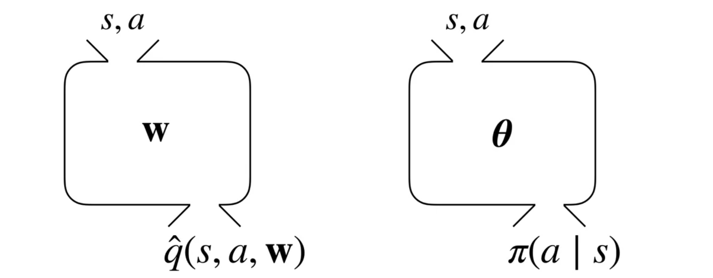
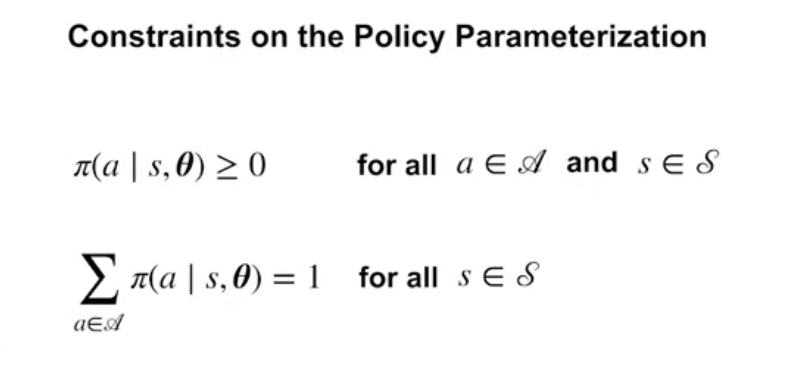
So far we have been mostly looking at learning value functions. But when it comes to function approximation, it is often simpler to learn a policy directly.
In the mountain car environment we see the power pumping policy which accelerates the car in the direction it is moving. This is a near optimal policy for this environment. The policy is simple and can be learned directly and it makes no use of value functions. This may not always be the case.
A visual summary of the policy parametrization is shown in the figure. Recall that the policy is a function that takes in a state and outputs a probability distribution over actions. We will use the greek letter \theta \in \mathbb{R}^d to denote the parameters of the policy. This way we can reference the parameters of \hat{Q}(s,a,w) the action value function are denoted by \mathbf{w}.
The parametrized policy is defined as follows:
\pi(a \mid s, \theta) \doteq Pr(A_t = a \mid S_t = s, \theta) \qquad \text{(parametrized policy)} \tag{2}
is a probability distribution over actions given a state and the policy parameters.
Since we are dealing with probabilities, the policy parameters must satisfy certain constraints. For example, the probabilities must sum to one. This is shown in the figure. These policy parameters constraints will ensure that the policy is valid.
Policy Gradient use gradient ascent:
\theta_{t+1} = \theta_t + \alpha \nabla_\theta J(\theta) \qquad \text{(gradient ascent)} \tag{3}
where \alpha is the step size and \nabla_\theta J(\theta) is the gradient of the objective function J(\theta) with respect to the policy parameters \theta.
- methods that follow this update rule are called policy gradient methods.
- methods that learn both a value function and a policy are called actor-critic methods.
Define one class of parameterized policies based on the softmax function
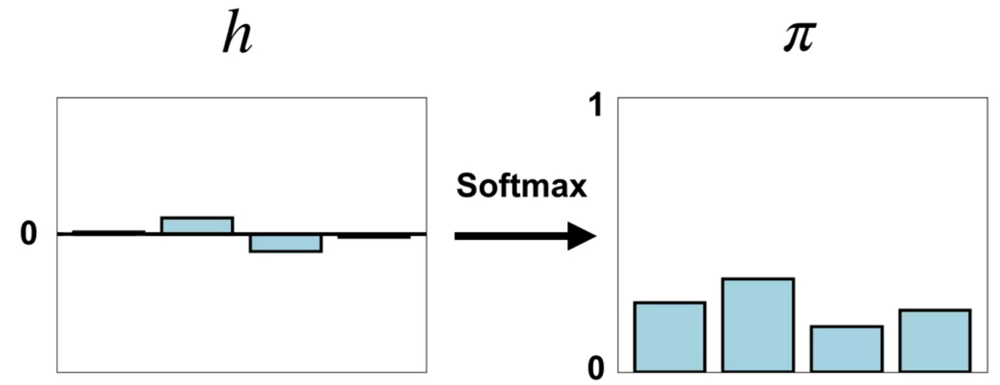
The Softmax policy based on the Boltzmann distribution is a probability distribution over actions given a state. It is parameterized by a vector of action preferences h(s, a, \theta).
\pi(a \mid s, \theta) \doteq \frac{e^{h(s, a, \theta)}}{\sum_{b\in \mathcal{A}} e^{h(s, b, \theta)}} \text{(softmax policy)} \qquad \tag{4}
- the numerator is the exponential of the action preference
- the denominator is the sum of the exponentials of all action preferences
Some properties of the softmax policy are that it can take in a vector of weights for different actions and output a probability distribution over actions. A second property is that the softmax policy generalizes the max function. A third property is that unlike the max function which is discontinuous the softmax policy is differentiable, making it amenable to gradient-based optimization.
- negative values of h lead to positive action probabilities.
- equal values of h lead to equal action probabilities.
- the softmax policy is a better option over than the \epsilon-greedy policy over the action-value based methods.
Advantages of Policy Parameterization (Video)
In this video we consider the advantages of using parameterized policies over action-value based methods. We will see that parameterized policies are more flexible than action-value based methods and can start off stochastic and then become deterministic.
Advantages of using parameterized policies over action-value based methods
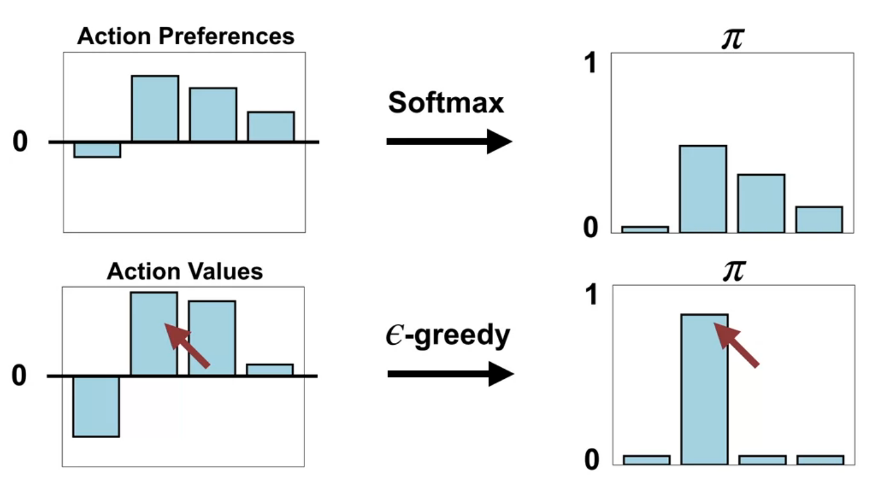
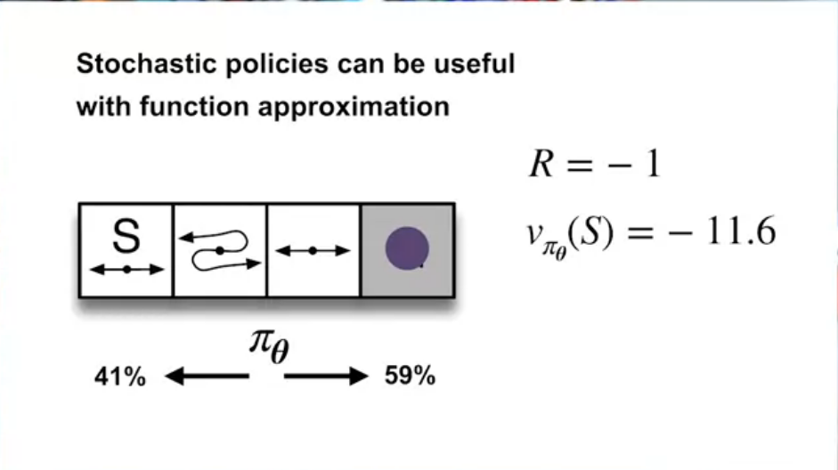
One advantage of parameterizing policies according to the softmax in action preferences is that the approximate policy can approach a deterministic policy, whereas with \epsilon-greedy action selection over action values there is always an \epsilon probability of selecting a random action.
A second advantage of parameterizing policies according to the softmax in action preferences is that it enables the selection of actions with arbitrary probabilities. In problems with significant function approximation, the best approximate policy may be stochastic.
For example, in card games with imperfect information the optimal play is often a mixed strategy which means you should take two different actions each with a specific probability, such as when bluffing in Poker.
Action-value methods have no natural way of finding stochastic optimal policies, whereas policy approximating methods can, as shown in The short Corridor environment
Lesson 2: Policy Gradient for Continuing Tasks
- parameterized policies are more flexible than action-value based methods
- can start off stochastic and then become deterministic
In function approximation, the optimal policy is not necessarily deterministic. Thus it is best to be able to learn stochastic policies.
Example where the optimal policy is stochastic:
- Sometimes it is just easier to learn a stochastic policy.
- E.g. in mountain car, the parameterized value function is complex, but the parameterized policy is simple.
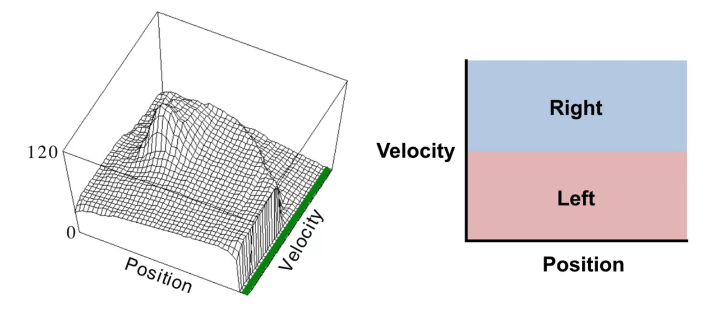
The Objective for Learning Policies (Video)
In this video Martha White dive deep into the objective for policy gradient algorithms. She then contrasts this with the gradient of the value fn objectives and lists some challenges for estimating the gradient of the average reward objective. We will learn that we can use the policy gradient theorem and to overcome these challenges and derive a gradient with an neat update rule .
The objective for policy gradient algorithms
Formalizing the goal as an Objective
\begin{align*} G_t &= \sum_{t=0}^{T} R_{t} \quad && \text{(episodic)} \newline G_t &= \sum_{t=0}^{\infty} \gamma^t R_{t} \quad && \text{(continuing - discounted reward)} \newline G_t &= \sum_{t=0}^{\infty} R_{t} - r(\pi) \quad && \text{(continuing - avg. reward)} \end{align*} \tag{5}
The average reward Objective for a policy is as follows: r(\pi) = \sum_{t=0}^{T} \mu(s) \sum_{a} \pi(a \mid s, \theta) \sum_{s',r} p(s',r \mid s,a) r \quad \text{(avg. reward objective)} \tag{6}
What does this mean?
- the last sum is the expected reward for a state-action pair. \mathbb{E}[R_t \mid S_t = s , A_t=a]
- the last two sums together are the expected reward for a state under weighted by the policy \pi. \mathbb{E}_\pi[R_t \mid S_t = s]
- full sum ads the time we spend in state s under \pi therefore the expected reward for a state under the policy \pi and the environment dynamics p. \mathbb{E}_\pi[R_t]
to optimize the average reward, we need to estimate the gradient of the avg. objective
\nabla_\theta r(\pi) = \nabla_\theta \sum_{t=0}^{T} \textcolor{red}{\underbrace{\mu(s)}_{\text{Depends on }\theta}} \sum_{a} \pi(a \mid s, \theta) \sum_{s',r} p(s',r \mid s,a) r \qquad \tag{7}
- Methods based on this are called policy gradient methods.
- We are trying to maximize the average reward.
There are a few challenges with using the gradient in the above equation:
According to the lesson \mu(s) depends on \theta. Martha White point out that this state importance though parameterized only by s actually depends on the the policy \pi which will evolve during its training based on the values of \theta. Which means out notation here is a bit misleading. She then contrasts it with the value function gradient is being evaluated using a fixed policy.
\begin{align*} \nabla_w \bar{VE} &= \nabla_w \sum_{s}\textcolor{red}{\underbrace{\mu(s)}_{\text{Independent of }\mathbf{w}}} [V_{\pi}(s)-\bar{v}(s,w)]^2 \newline &=\sum_{s} \textcolor{red}{\mu(s)} \nabla_w [V_{\pi}(s)-\bar{v}(s,w)]^2 \end{align*} \text{(value function gradient)} \qquad \tag{8}
We can avg reward as an objective for policy optimization and the its for the stochastic gradient ascent. Next we will consider how the policy gradient theorem can help us estimate the gradient of the average reward objective despite these setbacks.
The Policy Gradient Theorem (Video)
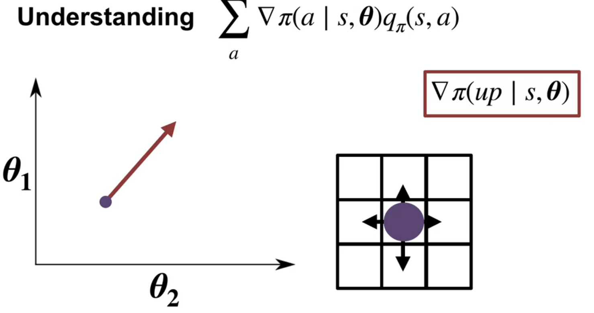
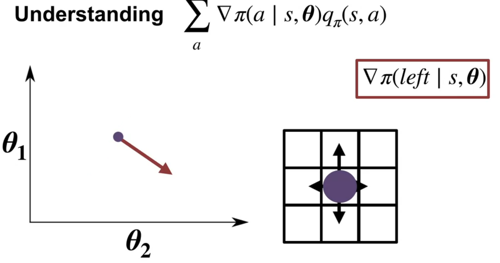
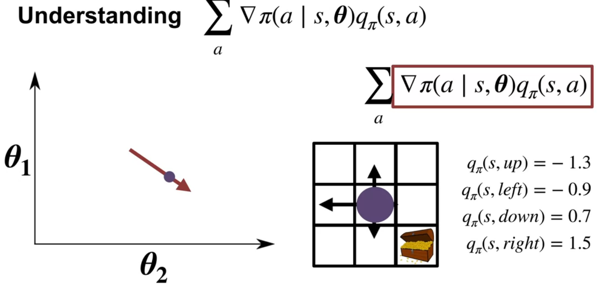
In this video course instructor Martha White explains the policy gradient theorem, a key result for optimizing policy in reinforcement learning. The goal is to maximize the average reward by adjusting policy parameters \theta using gradient ascent. The challenge is estimating the gradient of the average reward, which initially involves a complex expression with the gradient of the stationary distribution over states (\mu(s)).
The results of the policy gradient theorem
The policy gradient theorem simplifies this by providing a new expression for the gradient. This expression involves summing, over all states and actions, the product of the gradient of the policy and the action-value function (Q). The gradient of the policy indicates how to adjust parameters to increase the probability of an action, while the action-value function represents the expected return from taking that action.
The video illustrates this with a grid world example, showing how gradients for different actions point in different directions. By weighting these gradients with the corresponding action values, the theorem provides a direction to update the policy parameters that increases the probability of high-value actions and decreases the probability of low-value actions.
The product rule \nabla(f(x)g(x)) = \nabla f(x)g(x) + f(x)\nabla g(x) \qquad \text{(product rule)} \tag{9}
therefore:
\begin{align*} \nabla_\theta r(\pi) &= \sum_{t=0}^{T} \nabla \mu(s) \sum_{a} \pi(a \mid s,\theta) \sum_{s',r} p(s',r \mid s,a) r \newline &+ \sum_{t=0}^{T} \mu(s) \nabla \sum_{a} \pi(a \mid s, \theta) \sum_{s',r} p(s',r \mid s,a) r \end{align*} \tag{10}
The first term is the gradient of the stationary distribution and the second term is the gradient of the policy. The policy gradient theorem simplifies this expression by eliminating the need to estimate the gradient of the stationary distribution.
\begin{align*} \nabla_\theta r(\pi) &= \sum_{s\in \mathcal{S}} \mu(s) \textcolor{red}{ \sum_{a\in{\mathcal{A}}} \nabla \pi(a \mid s,\theta) q_\pi(s,a) } \end{align*} \tag{11}
The policy gradient theorem provides a new expression for the gradient of the average reward objective. This expression involves summing, over all states and actions, the product of the gradient of the policy and the action-value function (Q). The gradient of the policy indicates how to adjust parameters to increase the probability of an action, while the action-value function represents the expected return from taking that action.
Martha White points out that this expression is much easier to estimate.
Now let’s try to understand how we use the theorem to estimate the gradient.
What we will use it to approximate the gradient. Computing the sum over states is impractical.
What we will do do is take a stochastic samples. This involves updating the policy parameters based on the gradient observed at the current state.
To simplify the update rule, the concept of expectations is introduced. By re-expressing the gradient as an expectation under the stationary distribution of the policy, the update can be further simplified to involve only a single action sampled from the current policy.
The final update rule resembles other learning rules seen in the course, where the policy parameters are adjusted proportionally to a stochastic gradient of the objective. The magnitude of the step is controlled by a step-size parameter
The actual computation of the stochastic gradient requires two components: the gradient of the policy and an estimate of the action-value function
The policy gradient theorem
We need some preliminary results and definitions.
- The four part dynamics function from the [@sutton2018reinforcement pp. 48] book:
- Next we need the result from Exercise 3.18 in [@sutton2018reinforcement pp. 62]
- Next we need the result from Exercise 3.19 in [@sutton2018reinforcement pp. 62]
p(s', r \mid s, a) \doteq Pr\{S_t=s', R_t=r \mid S_{t-1} = s , A_{t-1}= a\} \qquad \text{(S.B. 3.2)} \tag{12}
The value of a state depends on the values of the actions possible in that state and on how likely each action is to be taken under the current policy. We can think of this in terms of a small backup diagram rooted at the state and considering each possible action:
Give the equation corresponding to this intuition and diagram for the value at the root node, v_\pi(s), in terms of the value at the expected leaf node, q_\pi(s, a), given S_t = s. This equation should include an expectation conditioned on following the policy, \pi. Then give a second equation in which the expected value is written out explicitly in terms of \pi(a \mid s) such that no expected value notation appears in the equation.
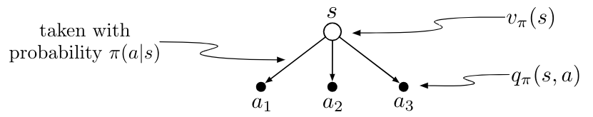
Solution
\begin{align} V_\pi(s) &= \mathbb{E_\pi}[q(s_t,a) \mid s_t = s, a_t=a ] && \text{(def. of Value)} \newline &= \sum_a Pr(a \mid s) q_\pi(s,a) && \text{(def. of Expectation)} \newline &= \textcolor{red}{\sum_a \pi(a \mid s)} \textcolor{green}{q_\pi(s,a)} && \text {(def. of policy)} \end{align} \tag{13}
The value of an action, q_\pi(s, a), depends on the expected next reward and the expected sum of the remaining rewards. Again we can think of this in terms of a small backup diagram, this one rooted at an action (state—action pair) and branching to the possible next states:
Give the equation corresponding to this intuition and diagram for the action value, q_\pi(s, a), in terms of the expected next reward, R_{t+1}, and the expected next state value, v_\pi(S_{t+1}), given that S_t = s and A_t = a. This equation should include an expectation but not one conditioned on following the policy. Then give a second equation, writing out the expected value explicitly in terms of p(s_0, r \mid s, a) defined by eq 3.2, such that no expected value notation appears in the equation.
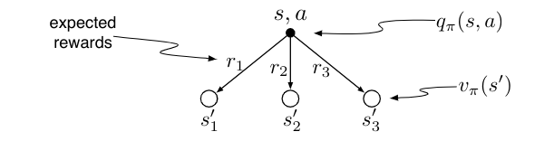
Solution
\begin{align*} q_\pi(s, a) &= \mathbb{E}[R_{t+1} v_\pi (s_{t+1}) \mid s_t = s, a_t = a] \newline &= \textcolor{blue}{\sum_{s', r} p(s', r \mid s, a)} \textcolor{pink}{[r + v_\pi(s')]} \end{align*} \qquad {#ex-319-solution}
\begin{align*} q_\pi(s, a) &= \sum_{s'} \mathbb{E}_\pi[G_{t} \mid S_{t+1}=s'] Pr\{S_{t+1} = s' \mid S_t = s, A_t = a\} \newline &= \sum_{s'} \mathbb{E}[R_{t+1} + \gamma G_{t+1} \mid S_t = s, A_t = a, S_{t+1} = s'] Pr\{S_{t+1} = s' \mid S_t = s, A_t = a\} \newline &= \sum_{s',r} \left( r + \gamma \underbrace{\mathbb{E}[G_{t+1} \mid S_{t+1} = s']}_{v_\pi|(s')} \right) p(s', r \mid s, a) \newline &= \sum_{s',r} [ r + \gamma v_\pi(s')] p(s', r \mid s, a) \end{align*}
Here is my version of the proof:
\begin{align*} \textcolor{cyan}{\nabla_\theta V_\pi(s)} &= \nabla_\theta \sum_a \textcolor{red}{\pi(a \mid s)} \textcolor{green}{ q_\pi(s,a) } && \text{backup } v_\pi \to q_\pi \text{ (Ex 3.18)} \newline &= \sum_a \nabla_\theta \pi(a \mid s) q_\pi(s,a) + \pi(a \mid s) \nabla_\theta q_\pi(s,a) && \text{product rule} \newline &= \sum_a \nabla_\theta \pi(a \mid s) q_\pi(s,a) + \pi(a \mid s) \nabla_\theta \sum_{s'} \textcolor{blue}{P(s',r \mid s, a)} \textcolor{pink}{[r + V_\pi(s')]} && \text{backup } q_\pi \to v_\pi \text{ (Ex 3.19)} \newline &= \sum_a \nabla_\theta \pi(a \mid s) q_\pi(s,a) + \pi(a \mid s) \sum_{s'} P(s',r \mid s, a) \nabla_\theta V_\pi(s') && P, r \text{ are const w.r.t. } \theta \newline =& \sum_{a \in \mathcal{A}} \Big( \nabla_\theta \pi(a \mid s)Q_\pi(s, a) + \pi(a \mid s) \sum_{s'} P(s' \mid s,a) \textcolor{cyan}{\nabla_\theta V_\pi(s')} \Big) && \text{total rule of probability on r for P } \newline & \blacksquare && \qquad \end{align*} \tag{14}
The importance of the policy gradient theorem
Crucially, the policy gradient theorem eliminates the need to estimate the gradient of the stationary distribution (\mu), making the gradient much easier to estimate from experience. This sets the stage for building incremental policy gradient algorithms, which will be discussed in the next lecture.
Lesson 3: Actor-Critic for Continuing Tasks
Derive a sample-based estimate for the gradient of the average reward objective
\theta_{t+1} \doteq \theta_t + \alpha \frac{ \nabla_ \pi (a_t \mid s_t, \theta)}{\pi (a_t \mid s_t, \theta)} q_\pi(s_t, a_t) \qquad \text{()}
\theta_{t+1} = \theta_t + \alpha \nabla_\theta ln \pi(a_t \mid s_t, \theta) q_\pi(s_t, a_t) \qquad \text{()} \tag{15}
where \alpha is the step size and \nabla_\theta J(\theta) is the gradient of the objective function J(\theta) with respect to the policy parameters \theta.
\nabla \ln (f(x)) = \frac{\nabla f(x)}{f(x)} \qquad \text{(log derivative)} \tag{16}
Reinforce Algorithm (Extra)
The reinforce algorithm isn’t covered in the course. However, it is in the readings. Also the reinforce algorithm is said to be the most direct implementation of the policy gradient theorem. Finaly the reinforce algorithm is used in one of my research projects and this seems to be a great opportunity to understand it better.
So without further ado, let’s dive into the reinforce algorithm.
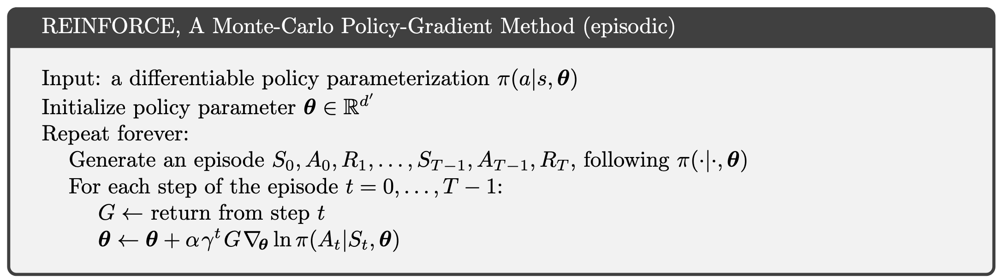
Reinforce reveals the main issues with the policy gradient theorem. While the policy gradient theorem provides an unbiased estimate of the gradient of the average reward objective, it is a high variance estimator. This means that the gradient is very noisy and can lead to slow learning.
One wat to reduce the variance of the policy gradient theorem is to use a baseline. A baseline is a function that is subtracted from the reward to reduce the variance of the policy gradient theorem. Subtracting the baseline does not change the expected value of the gradient3, but it can reduce the variance of the gradient estimate.
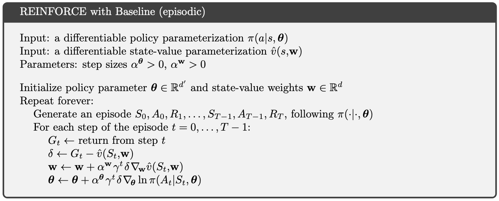
the change is in the last three lines. The baseline is subtracted from the return G and the gradient is scaled by the baseline.
Describe the actor-critic algorithm for control with function approximation, for continuing tasks
Lesson 4: Policy Parameterizations
Actor-Critic with Softmax Policies (video)
Adam White discusses one specific implementation of the actor-critic reinforcement learning algorithm using a linear function approximation of the action value with tile coding and a Softmax policy parameterization.
Actor-critic methods combine direct policy optimization (actor) with value estimation (critic) using temporal difference learning.
The critic evaluates the policy by updating state value estimates, while the actor updates policy parameters based on feedback from the critic. This implementation is designed for finite action sets and continuous states. It employs a Softmax policy that maps state-dependent action preferences to probabilities, ensuring these probabilities are positive and sum to one. Each state effectively has its own Softmax distribution, and actions are sampled proportionally to these probabilities.
Both the value function and action preferences are parameterized linearly. The critic uses a feature vector representing the current state to estimate the value function. For the actor, the action preferences depend on both state and action, necessitating a state-action feature vector. The parameterization requires duplicating state feature vectors for each action, resulting in a policy parameter vector (θ) larger than the critic’s weight vector (W).
The algorithm’s update equations include:
Critic Update: A straightforward semi-gradient TD update using the feature vector scaled by the temporal difference residual (TDR). Actor Update: A more complex gradient that involves two components: State-action features for the selected action. A sum over all actions of state-action features scaled by the policy probabilities.
Derive the actor-critic update for a softmax policy with linear action preferences
The critic’s update rule is:
\mathbf{w} \leftarrow \mathbf{w} + α^\mathbf{w} \delta \nabla \hat{v}(S,w)
which uses semigradient TD(0) to update the value function.
The actor uses the tf-error from the critic to update the policy parameters: θ \leftarrow θ + α^θ δ ∇ \ln \pi (A \mid S,\theta)
policy update with a softmax policy is:
\pi(a \mid s, \theta) \doteq \frac{e^{h(s, a, \theta)}}{\sum_{b\in \mathcal{A}} e^{h(s, b, \theta)}}
this is like having a different softmax for each state
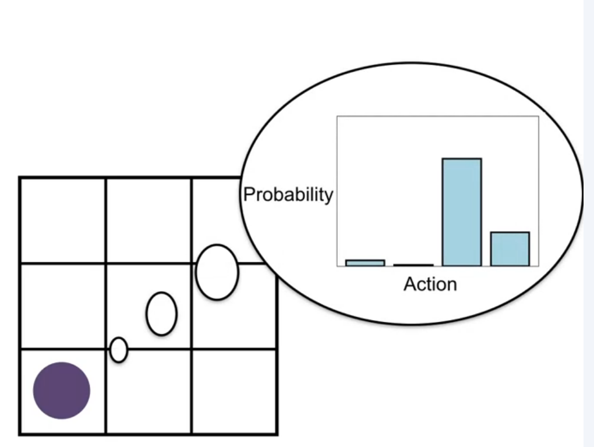 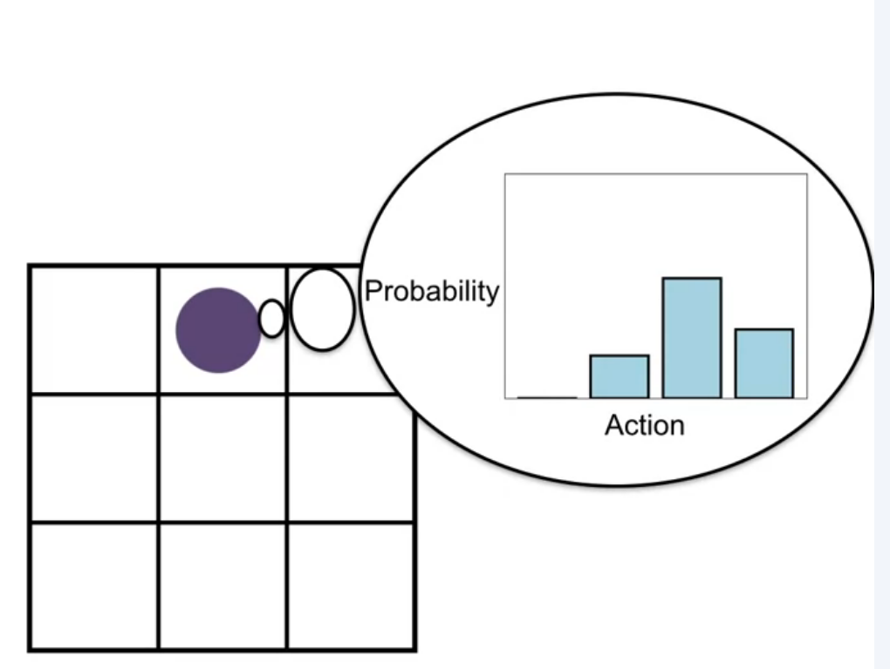 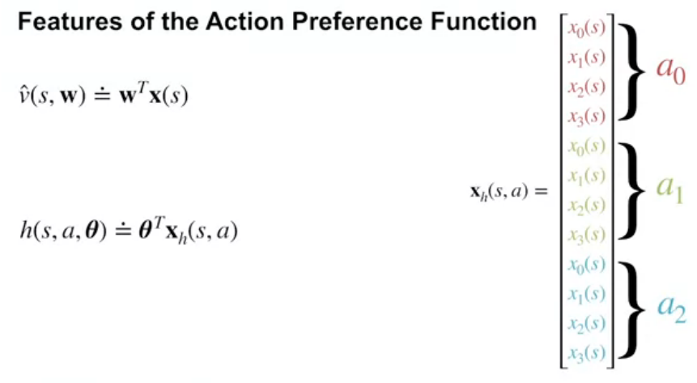
Feature of the action preferences function
for the critic \hat{v}(s,w) \doteq w^T x(s)
for the actor
h(s,a,θ) \doteq θ^T x_h(s,a)
we can do this by stacking
So with the softmax policy the critic’s update is:
w \leftarrow w + α^w \delta x(s)
and the actor’s update to the preferences looks as follows.
\nabla \ln \pi(a \mid s, \theta) = x_h(s,a) - \sum_b \pi(b \mid s, \theta) x_h(s,b)
The gradient has two parts.
The first is the state action features for the selected action xh(s,a).
The second part is the state action features multiplied by the policy summed over all actions ∑ b π(b|s,θ)xh(s,b).
Implement this algorithm
Design concrete function approximators for an average reward actor-critic algorithm
Analyze the performance of an average reward agent
Derive the actor-critic update for a gaussian policy
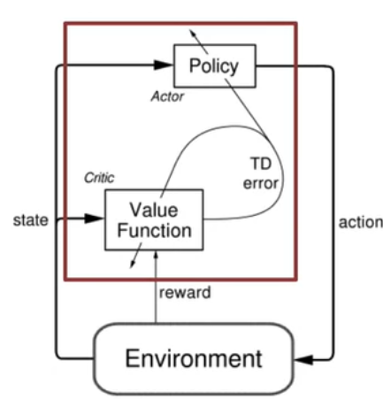
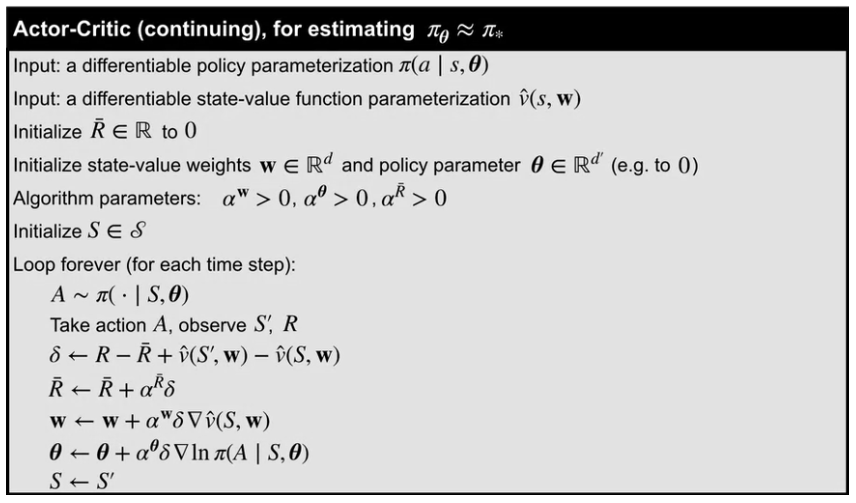
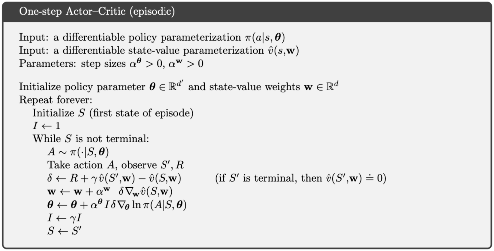
Apply average reward actor-critic with a gaussian policy to a particular task with continuous actions
Are tasks really ever continuing? Everything eventually breaks or dies. It’s clear that individual people do not learn from death, but we don’t live forever. Why might the continuing problem formulation be a reasonable model for long-lived agents?